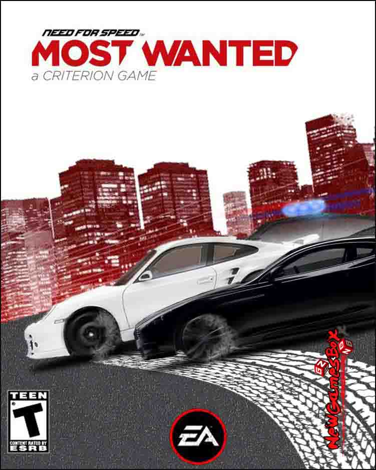

NFS MOST WANTED 2012
NFS MOST WANTED 2012 PC Game Overview
Need for Speed Most Wanted 2012 is a racing game that has been developed by Criterion Games, a Surrey based British video game developer. This game has been published under the banner of Electronic Arts. Need For Speed is probably the most famous and longest running car racing game and Need for Speed Most Wanted 2012 is the 19th edition of this famous game. You can also download Need For Speed Hot Pursuit 1.
Need For Speed Most Wanted 2012 has been set in the open world and there are three modes of racing. The player selects a car of his/her choice. and then compete with the others. The three modes are Circuit race, Sprint race and Speed runs. In Circuit race mode the players needs to complete the laps which are two or three in numbers as quickly as possible. In the Sprint race mode the player is all set to drive from one point of the city to the other point defined in the game. While in the Speed race mode involves driving the car through a course with the highest average speed possible in order to win the game.
Cops are also present there as is in every Most Wanted game. The cops will put the hurdles in your path and can arrest you as well. You need to deploy a strategy so that you can slip away from the eyes of the cops. Sound tracks have always been a hallmark in the Need For Speed games. Need for Speed Most Wanted 2012 also contains some of the very catchy sound tracks which includes remixes of The Who ( An English Rock band formed in the mid sixties) songs. You may also like to download need for speed most wanted 2005.
System Requirements of NFS MOST WANTED 2012
Before You Start NEED FOR SPEED MOST WANTED 2012 Download Free. Make Sure Your PC Meets Minimum System Requirements.
Recommended System Requirements
Operating System: Windows Vista/ Windows 7/ Windows 8 and 8.1
CPU: Intel Core 2 Duo or faster.
RAM: 2GB
Hard Disk Space: 20GB
NFS MOST WANTED 2012 Free Download
Click On The Below Button To Start NFS MOST WANTED 2012 Free Download. It Is Full And Complete Game. Just Download And Start Playing It.
We Have Provided Direct Link Full Setup Of The Game.